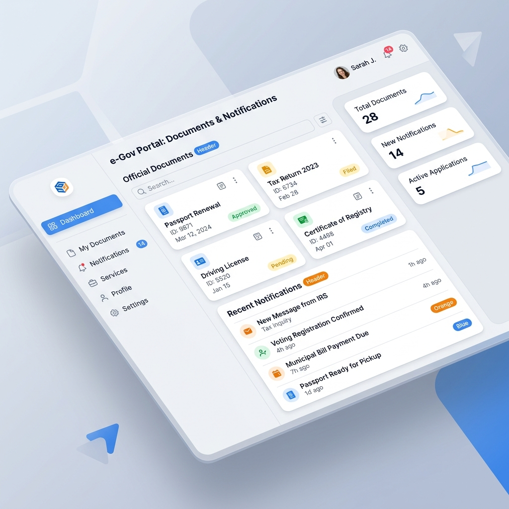
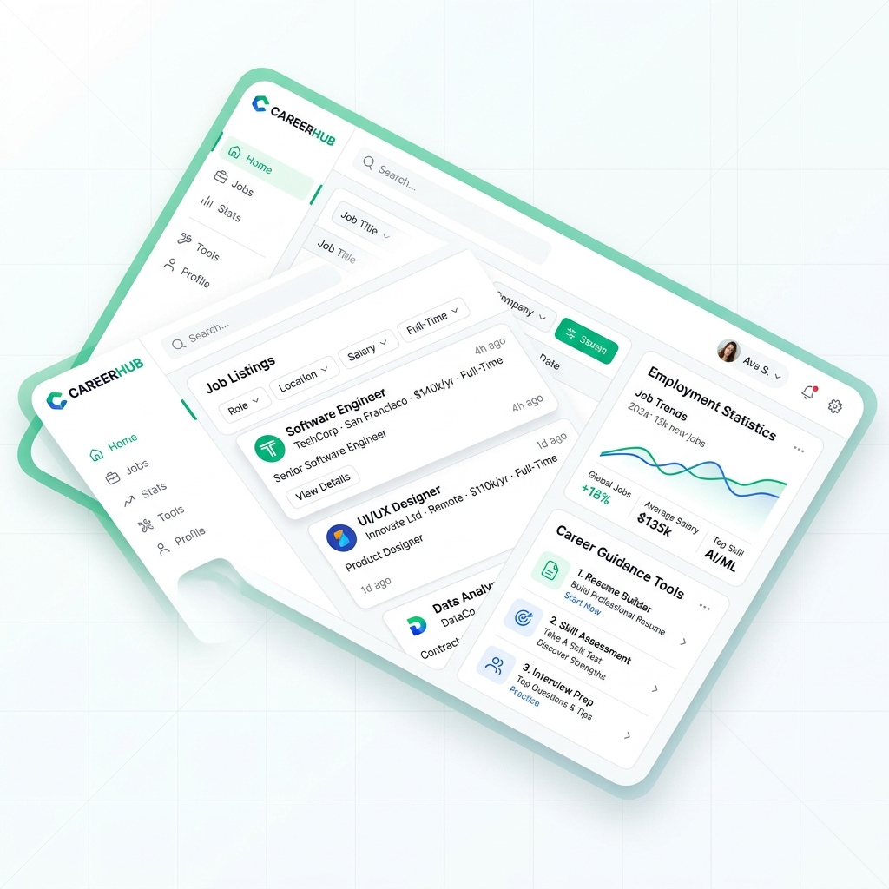

Identidad Digital, SAE, SEPE y Estrategias de Inserción
Evaluación de Competencias Profesionales
Archivo que garantiza identidad. Emitido por FNMT.
Usuario y contraseña + SMS para mayor seguridad.
App con QR o PIN temporal (10 min).
Chip físico. Requiere lector USB o NFC en el móvil.
Reglamento europeo. Tu identidad digital es interoperable en las administraciones de toda la Unión Europea.
Plataforma que aglutina Estado, CCAA y Ayuntamientos en un solo lugar.

El portal central de la Seguridad Social donde confluyen todos los registros, trámites y certificados oficiales.
Portal de la Tesorería General, muy intuitivo y accesible desde el móvil.
Portal TuSS: Gestión de prestaciones y asistencia médica.
Estrategias, Herramientas y Elevator Pitch
Entrega física de CV. Útil en comercio local o PYMES. Permite una primera impresión humana directa.
Contacto directo para solicitar entrevista o identificar al responsable de RRHH. Requiere guion claro.
Envío de carta de presentación y CV adjunto. Permite personalización profunda según la empresa.
A través de apartados "Trabaja con nosotros", redes como LinkedIn o formularios corporativos.
Es el complemento perfecto del CV. Su objetivo no es repetir datos, sino explicar por qué quieres trabajar ahí y qué valor aportas.
Técnica de presentación para "vender" tu perfil profesional en menos de 60 segundos.
SAE, SEPE, IMV y Redes Formativas
Portal integral para la gestión de la demanda sin esperas:
Programas específicos del SAE:

Documento de Alta y Renovación de la Demanda. Contiene la fecha de la próxima renovación.
Informe que resume tu trayectoria, formación y ocupaciones solicitadas registradas en el SAE.
Certificado que acredita cuánto tiempo llevas inscrito como demandante (antigüedad).
Registro de ofertas rechazadas o causas de baja en la demanda para procesos de seguimiento.
Requisito básico: Haber cotizado al menos 360 días en los últimos 6 años.
Cálculo: Cuanto más tiempo cotizado, más meses de paro.
La gran bolsa de empleo del Estado.
No llegar a 360 días cotizados.
Para quienes han consumido su paro.
Subsidio hasta la jubilación.
Hasta 11 meses. Colectivos vulnerables:
Prestación dirigida a prevenir el riesgo de pobreza y exclusión social de personas que carecen de recursos económicos básicos.
Infojobs, LinkedIn, Infoempleo o Indeed. Gestión masiva de CVs y filtros de búsqueda avanzada.
Entidades públicas o privadas (autorizadas por SEPE/SAE) que ayudan a encontrar empleo.
Empresas como Adecco o Randstad que contratan para ceder trabajadores a otras empresas.
El mercado oculto: El 75% de las ofertas no se publican y se cubren por recomendaciones.
Formación Bonificada para trabajadores en activo.
Nuevo modelo de Formación Profesional para el Empleo en Andalucía.
Red de unidades que ofrecen asesoramiento, Itinerarios Personalizados de Inserción (IPI) y acompañamiento experto.
Puntos físicos y plataforma online para la capacitación en competencias digitales transversales (Básico a Avanzado).
Programas estatales de fomento de la empleabilidad femenina, emprendimiento y reducción de brecha digital.
Plataformas masivas donde universidades top mundiales ofrecen cursos gratuitos de gran prestigio para el CV.
Buscador y sistema de alertas del Estado para todas las oposiciones.
Contratos de Trabajo y Derechos de la Persona Trabajadora
Ocupación efectiva, promoción, formación, no discriminación, integridad física, intimidad y remuneración puntual.
Cumplir obligaciones, acatar medidas de seguridad, seguir instrucciones del empresario y contribuir a la productividad.
La norma es el Indefinido. El temporal requiere causa justificada.
La Garantía Juvenil en España
Es una iniciativa a nivel europeo que busca facilitar el acceso de los jóvenes al mercado de trabajo. En España, está integrada en las políticas activas de empleo estatales y autonómicas.
Ha logrado una reducción paulatina de la tasa de paro juvenil en España (históricamente la más alta de la UE), fomentando la primera experiencia laboral.
Persiste la temporalidad y precariedad en las primeras inserciones. A menudo, el joven enfrenta trabas burocráticas para registrarse y un "desajuste" entre su formación y lo que pide la empresa.
Necesidad de vincular más el registro a la FP Dual, establecer itinerarios hiper-personalizados y mejorar la coordinación entre la plataforma nacional y el SAE andaluz.
Empleo y Voluntariado en la Unión Europea
Plataforma oficial de la UE dirigida a jóvenes para descubrir oportunidades de estudio, trabajo, viajes e intercambios por toda Europa.
Evaluación de Conocimientos: Administración Digital y Empleo
Presentado ante el Grupo de Formación SAE de Ingeus.
Candidato: Javier Macías Lara